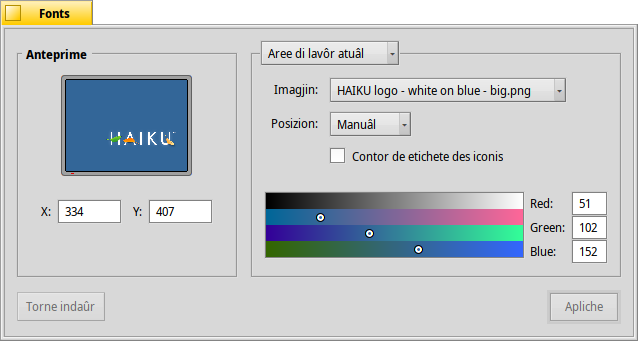

Fonts
Fonts
| Deskbar: | ||
| Posizion: | /boot/system/preferences/Backgrounds | |
| Impostazions: | ~/config/settings/system/app_server/workspaces ~/config/settings/Backgrounds settings - al salve la posizion dal barcon dal panel |
Par ogni spazi di lavôr, tu puedis stabilî come fonts un colôr o une imagjin par ogni cartele e pal Scritori.
Il menù superiôr al specifiche se lis modifichis a vegnin aplicadis dome al spazi di lavôr atuâl, a ducj i spazis di lavôr, a une cartele specifiche opûr come predefinidis par ogni gnove cartele.
Sot di chel tu puedis assegnâ une imagjin o selezionâ se tu desideris vê dome un fonts colorât. Lis imagjins a puedin ancje jessi strissinadis e moladis inte anteprime a çampe.
Se tu stâs doprant une imagjin, tu âs di decidi il plaçament:
| ti permet di specificâ lis coordenadis. Tu puedis strissinâ la figure ator inte anteprime a çampe opûr inserî X e Y a man. | ||
| al centre la figure tal mieç dal schermi. | ||
| al slargje la figure, cence tignî cont des sôs proporzions, fintremai che nol jemple il schermi. | ||
| al jemple il schermi ripetint la figure. |
Ativant al met un fin contor tor ator des etichetis des iconis.
Indiche se il jessi neri o blanc dal test atuâl di une etichete di icone al dipent de impostazion dal seletôr dal colôr. Un colôr scûr al met a blanc il test, un colôr clâr lu met a neri. Duncje, se tu assegnis pal fonts une imagjin une vore clare, tu varessis ancje di meti il seletôr dal colôr suntun colôr clâr, par podê vê la pussibilitât di lei lis etichetis des iconis in neri. (O doprâ la opzion contor parsore.)
Il colôr selezionât al è ancje rifletût te applet Spazis di lavôr, che e ignore lis imagjins come fonts.
| al puarte indaûr lis impostazion a chês che a jerin ativis cuant che si à inviât lis preferencis Fonts. | ||
| al apliche lis tôs modifichis. |